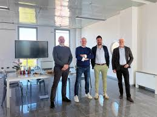

La nostra azienda nasce nel 1990. Molte delle nostre proprietà sono situate in Italia, ma anche nel resto d'Europa in paesi come Spagna, Portogallo e Francia. La nostra è una storia che parte da alcuni ragazzi che vivono in piccoli comuni situati vicini, i quali hanno scelto di intraprendere questa sfida audace promuovendo il caffè selezionato e realizzato in una piccola realtà. Col passare degli anni ed espandendo sempre più il raggio di vendita siamo riusciti ad incrementare le entrate e a creare una vera e propria azienda, trasformatasi ormai in una delle più famose. La qualità è rappresentata dalla molteplice varietà di chicchi di caffè rendendo il sapore e l'odore del nostro caffè qualcosa di irresistibile.
